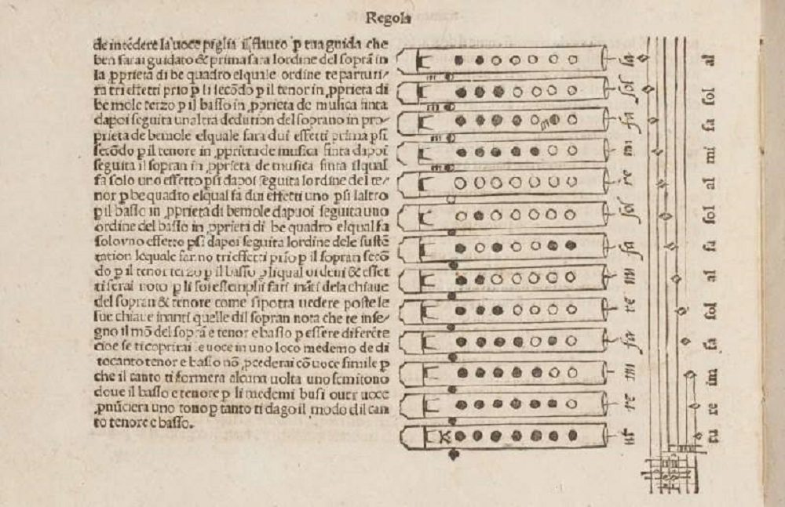

Teaching the Recorder to Speak
Note 031
Home > Blog A Musician's Log > Note 031
An instrument that should speak
In 1535, the Venetian instrumentalist Silvestro Ganassi published Opera intitulata Fontegara, the earliest printed method devoted specifically to the recorder and the first extensive treatise dedicated to the art of instrumental diminution. The book combined instructions on playing technique with a remarkable collection of musical examples intended to demonstrate how an existing melodic line could be elaborated through shorter notes and complex rhythmic figures.
Ganassi was an accomplished professional musician employed by the Venetian Republic. His activities included membership in the official instrumental ensemble associated with the doge, performance in private musical gatherings, and teaching. The publication of Fontegara, dedicated to Doge Andrea Gritti, belonged to this professional environment and to the rapidly developing culture of music printing in sixteenth-century Venice (Titan, 2019).
The treatise begins with an argument that establishes the purpose of its technical instructions. Ganassi considers the human voice superior to musical instruments and proposes that instrumentalists should imitate it as closely as possible. He compares this task to the work of a painter who reproduces living forms through the manipulation of colour. The musician, similarly, must use the resources of the instrument to reproduce qualities associated with human expression.
The comparison extends beyond musical tone. Ganassi maintains that skilled instrumental performance can imitate the articulation of speech, including the expressive inflections through which the voice communicates different emotional states.
The recorder is therefore not presented simply as a mechanism for producing accurately pitched notes. It is an instrument whose technical possibilities must be cultivated in the service of musical expression.
Breath, tongue, and fingers
Ganassi organizes his discussion of recorder technique around the coordination of three physical resources: breath, tongue, and fingers.
Breath determines the production and continuity of sound. Its management also influences intonation, tonal intensity, and the expressive quality of individual notes. Ganassi's instructions require the player to distinguish between different degrees of force and to develop control over the relationship between blowing and the resulting pitch.
Articulation receives particularly detailed attention. The treatise describes several combinations of syllables intended to produce different qualities of attack and continuity. Three principal forms are traditionally represented as teke, tere, and lere.
These combinations involve different movements of the tongue. The first produces comparatively distinct articulation, while the last permits a smoother succession of notes. The intermediate form combines elements of both. Ganassi also discusses modifications of these syllables and their application to rapid passages.
The syllables should not be understood merely as verbal labels for fixed playing techniques. They are practical attempts to describe movements that produce audible differences. The tongue becomes an instrument of rhythmic articulation, shaping the relationship between successive notes.
The fingers provide a further dimension of control. Beyond selecting pitches, their movement can modify the sound through partial covering of holes, alternative fingerings, and ornaments involving rapid finger motion.
These operations are interdependent. Alterations in breath may affect intonation, while fingerings and articulation modify the response of individual notes. The performer must coordinate them through practice and attentive listening.
The instructions demonstrate a sophisticated understanding of the recorder as a responsive instrument whose behaviour depends on the interaction between its construction and the player's technique.
Beyond the ordinary range
One of the most remarkable sections of Fontegara concerns the extension of the recorder's compass.
Earlier printed fingering charts, including those published by Sebastian Virdung in Musica getutscht (1511), documented a relatively restricted range. Ganassi not only provides extensive fingering tables for ordinary notes and chromatic alterations but also introduces seven additional notes beyond the range he considers customary.
In chapter four, he explicitly presents these fingerings as the result of prolonged experimentation. He claims that other musicians had occasionally extended the normal compass by one or two notes, whereas his investigations had enabled him to discover seven.
The additional notes occupy the instrument's upper register, extending its compass beyond two octaves. Their production requires fingerings that do not always follow the patterns used for lower notes.
Significantly, Ganassi provides separate charts for three recorders distinguished by their makers' marks. The fingerings differ among the instruments, and some pitches are unavailable on particular examples.
This detail has important implications for the history of instrumental technique. Ganassi's extended compass was not a universally applicable system independent of instrument construction. It depended on experimentation with particular recorders and their individual acoustic properties.
His approach also emphasizes the judgment of the ear. Intonation must be evaluated through listening rather than established exclusively by theoretical rules.
The treatise thus documents an interaction between instrumental design and empirical investigation. The recorder's capabilities are not treated as exhausted by its conventional fingering system. They can be extended through technical experimentation, although the results remain conditioned by the instruments themselves.
Diminution as musical invention
The largest part of Fontegara concerns diminution, the practice of elaborating a melodic passage by replacing longer notes with sequences of shorter values.
Ganassi organizes his examples according to recurring melodic and rhythmic situations, including ascending and descending intervals and cadential formulas. These models allow performers to examine alternative ways of elaborating an existing line while maintaining its recognizable structural relationships.
The resulting passages are often exceptionally intricate. They involve rapid melodic movement, repeated rhythmic figures, rests, syncopations, and combinations of note values that challenge straightforward modern interpretations.
Ganassi's treatment of rhythmic proportion is particularly distinctive. His four principal regole employ increasingly complex relationships involving four, five, six, and seven subdivisions. These procedures generate patterns whose internal organization can be difficult to recognize when transcribed into modern notation.
Dina Maria de Oliveira Titan's research has challenged the interpretation of these examples as approximate written representations of spontaneous improvisation. Her analysis identifies systematic rhythmic transformations, including the inversion and reordering of patterns, and suggests that Ganassi's diminutions were carefully constructed according to intellectual principles extending beyond ordinary instrumental ornamentation (Titan, 2019).
Although diminution was closely associated with improvised performance, the examples in Fontegara should not necessarily be understood as transcripts of actual improvisations. They also constitute an organized body of musical invention prepared for publication.
Ganassi's procedures demonstrate how the performer could transform a melodic framework without simply abandoning it. The existing line supplies a structural basis, while diminution introduces new rhythmic and melodic relationships.
The instrumentalist's contribution therefore exceeds the mechanical execution of a written composition. It includes the capacity to generate musically appropriate elaborations according to learned principles.
Imitating the expressive voice
Ganassi's discussion of imitation provides a framework for understanding the expressive purpose of these techniques.
He identifies three important qualities of instrumental performance: imitatione, pronteza, and galanteria. The first concerns imitation, particularly of vocal expression; the second involves readiness or agility; and the third refers to grace or expressive refinement.
These qualities are interconnected. Technical agility enables the performance of elaborate passages, but virtuosity alone does not fulfil the requirements of musical expression.
Ganassi describes finger ornaments involving rapid movements over particular holes. These produce pitch fluctuations of different sizes, ranging from intervals of a third to much smaller variations. He distinguishes more vigorous ornaments from gentler ones according to their intervallic character and manner of execution. The appropriate effect depends on the expressive character of the music.
Ganassi again turns to singing as his model. An accomplished singer, he explains, considers the meaning of the words before determining how they should be delivered. Joyful words require an appropriately lively expression, while mournful or delicate passages call for a different vocal manner. The instrumentalist must make comparable decisions despite the absence of sung text.
The imitation of the human voice consequently involves more than reproducing its melodic flexibility. It requires translating expressive distinctions into articulation, rhythm, tonal quality, and ornamentation.
The treatise presents instrumental technique as an art of expressive imitation, in which manual skill and musical judgment work together.
The printed book and the professional musician
The publication of Fontegara also belongs to a transformation in the transmission and social recognition of instrumental knowledge.
The printed treatise allowed technical instructions and musical examples to circulate beyond Ganassi's immediate professional environment. Players who could not study directly with him could nevertheless consult his fingerings, articulation systems, and diminutions.
This did not eliminate the importance of oral instruction. Written descriptions of tongue movements, blowing techniques, and ornaments cannot fully reproduce the physical experience of performance. Their interpretation still requires musical knowledge, experimentation, and practical judgment.
Printing nevertheless provided a different means of preserving and communicating instrumental expertise.
Ganassi's decision to publish was also connected to his professional ambitions. The surviving historical documentation examined by Titan identifies his participation in Venetian musical institutions, his commercial activities, and his efforts to secure legal protection for Fontegara.
The book's dedication, elaborate frontispiece, and presentation of advanced instrumental knowledge contributed to the public construction of Ganassi's professional identity. In sixteenth-century Venice, instrumentalists did not necessarily possess the same cultural prestige as composers or singers. By presenting instrumental performance as the product of intellectual effort, empirical investigation, and artistic judgment, Ganassi participated in broader discussions concerning the status of the arts.
His treatise asserted that instrumental skill involved more than manual proficiency. It required the ability to investigate, invent, discriminate, and communicate.
Technique as an intellectual art
Fontegara occupies an important position in the history of instrumental pedagogy because it brings together several kinds of knowledge that are often considered separately.
Its fingering tables document practical investigation of the recorder's acoustic possibilities. Its discussions of breath and articulation describe how physical movements produce musical effects. Its diminution examples demonstrate systematic procedures for melodic and rhythmic elaboration. Its emphasis on vocal imitation connects technical proficiency with expressive judgment.
The treatise does not provide a complete description of recorder performance throughout sixteenth-century Europe. It records the knowledge, experiments, and artistic ambitions of a particular musician working within the cultural environment of Renaissance Venice. Nor does its publication demonstrate a transition from unrestricted oral practice to universally standardized instrumental technique. What it establishes is something more specific: the possibility of representing a highly developed performance practice through a combination of verbal explanation, fingering diagrams, and musical notation.
Ganassi attempted to make instrumental expertise communicable without reducing it to the execution of fixed notes. The recorder remained an instrument whose sound depended on breath, fingers, articulation, and the judgment of the performer. Through Fontegara, these activities also became subjects of written investigation and musical theory.
The significance of the book lies in this combination of practice and reflection. It presents the instrumentalist not simply as someone who reproduces music, but as an artist capable of extending the possibilities of an instrument and shaping musical expression through cultivated technique.
Readings
- Bolton, Philippe. n.d. "Historical Recorder Fingering Charts." Philippe Bolton, Recorder Maker.
- Brown, Howard Mayer. 1976. Embellishing Sixteenth-Century Music. London: Oxford University Press.
- Ganassi, Silvestro. 1535. Opera intitulata Fontegara. Venice: author. Facsimile reprint, Bologna: Arnaldo Forni Editore, 1969.
- Ganassi, Silvestro. 1959. Opera intitulata Fontegara, Venice 1535: A Treatise on the Art of Playing the Recorder and of Free Ornamentation. Edited by Hildemarie Peter. English translation by Dorothy Swainson. Berlin-Lichterfelde: Robert Lienau.
- Lasocki, David. 1995. "Instruction Books and Methods for the Recorder from around 1500 to the Present Day." In The Cambridge Companion to the Recorder, edited by John Mansfield Thomson, 119–135. Cambridge: Cambridge University Press.
- Titan, Dina Maria de Oliveira. 2019. The Origins of Instrumental Diminution in Renaissance Venice: Ganassi's Fontegara. PhD dissertation, Utrecht University.
- Titan, Dina. 2022. "The Printing of Silvestro Ganassi's Fontegara: A Comparative Survey of the Extant Copies." Recercare 34: 13–59.